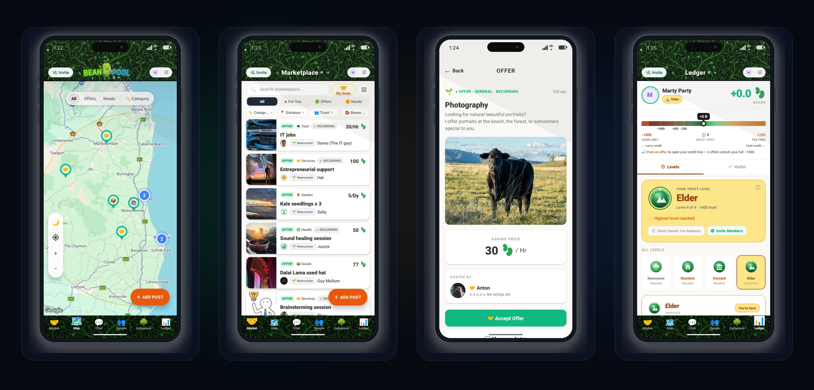

Stay in the Loop
Stay in the Loop
Get notified about new releases, federation updates, and network milestones.
No lookalike audience tracking, data harvesting, or predatory "get rich quick" guru algorithms filling your feed.
Beans are mutual credit for real trade between neighbours — never traded on exchanges or pumped by speculators.
No dopamine-loop doomscrolling. You only see actual community offerings, local needs, and real members.
No interest, no central banks, and no middlemen. 100% of circulation contributions stay in your local Commons pool.
BeanPool is a decentralized mutual credit protocol and native mobile app that lets neighborhoods trade goods and services, federate inter-community trade without fiat money, and build resilient local wealth.
A zero-sum community exchange where value flows directly from real services between real people — no debt, no interest, no banks.
Deploy a lightweight sovereign node with Docker on any server or Raspberry Pi. Your community owns its data, ledger, and rules.
Cryptographic Ed25519 keys generated on your device. Choose pure passkey self-custody or seamless 1-click encrypted SSO cloud backup + Social Recovery.
Start at zero. Earn your credit floor through completed trades with diverse members, unlocked by keeping active community offers live.
Trade with neighbouring towns via Keynesian multilateral clearing connectors, while progressive circulation fees fund democratic local projects.

Not a speculative token. Not a corporate startup. A complete protocol for community sovereignty.
Trade between towns and nodes without fiat currency. Inspired by John Maynard Keynes’ Bancor and multilateral clearing unions, BeanPool Connectors enable autonomous community nodes to trade cross-border peer-to-peer. Transactions clear symmetrically across nodes with automated routing and zero drain on local currency reserves.
True self-sovereignty for power users with hardware passkeys & SecureStore, plus 1-click encrypted cloud backup via Apple/Google SSO and Shamir Social Guardian Recovery so everyday members never lose access.
Credit lines are earned through verified multi-party trades — never bought or granted arbitrarily. Carrying a debit balance requires maintaining live active offers, ensuring all credit is backed by ongoing community commitment.
Protect home addresses while trading locally. Automatically obscure your location at the Regional, Postal Code, or Neighborhood level while remaining mathematically verified across the web-of-trust tree.
A modest progressive circulation incentive (demurrage) on idle surplus balances encourages active local exchange and continuously feeds a Community Commons pool for member-voted civic projects.
A dedicated operator control plane for multi-node networks: live telemetry, automated encrypted snapshot backups (harvester), tamper-resistant audit logs, and peer health monitoring.
Communicate privately to negotiate trades, coordinate pickups, and sign cryptographic transaction receipts with end-to-end encryption.
Discover active communities running BeanPool nodes connecting people near you.
BeanPool runs anywhere Docker runs. Grab the source, configure your node identity, and bootstrap your community instantly.
git clone https://github.com/beanpool-org/beanpool.git
cp .env.example .env # Set community name & domain
docker compose up -d
Stay in the LoopGet notified about new releases, federation updates, and network milestones.